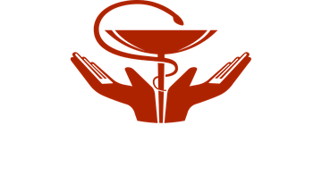
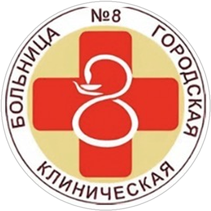

Медицинская карта активиста · № 8
Профсоюзный анамнез
история одного активиста
Голосование · до 4 ноября включительно
Поддержите ролик во ВКонтакте!
Нажмите кнопку, поставьте ❤️ под роликом и напишите пару слов в комментарии — для призёров считается и то, и другое.
Поддержать во ВКонтакте

Конкурс видеороликов «Наш Профсоюз: история в кадре, награда — в путешествии»
Автор: Давыдова Наталья Владимировна
Первичная профсоюзная организация ГАУЗ ОЗП «ГКБ № 8 г. Челябинск»
Челябинская областная организация Профсоюза работников здравоохранения РФ